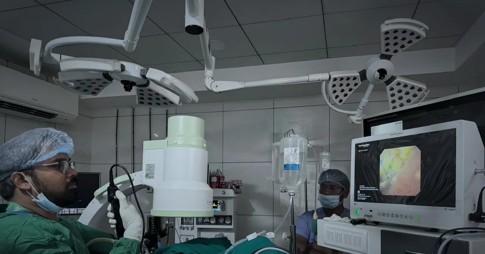
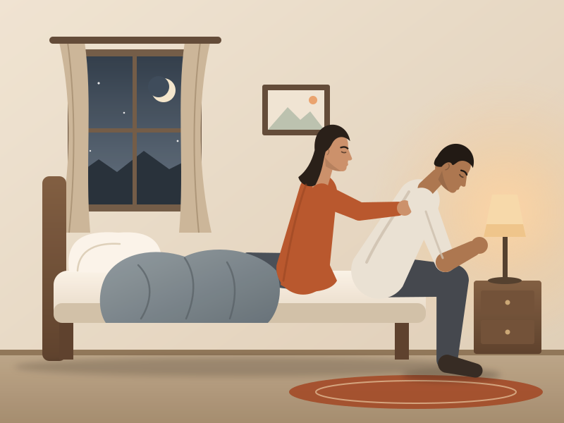

(01) What we treat
Conditions we treat.
-
01
Kidney & ureter stones
Side or back pain, blood in urine, stones seen on a scan, and stones that keep coming back.
-
02
Enlarged prostate
Weak or slow stream, straining, dribbling, or waking at night to pass urine.
-
03
Erectile dysfunction
Difficulty getting or keeping an erection, checked for its cause and treated with tablets, injection therapy or other options that suit you.
-
04
Premature ejaculation
Ejaculating sooner than you or your partner would like. Treatment combines medicine and simple techniques.
-
05
Male infertility & varicocele
Semen and hormone tests, and treatment including varicocele repair.
-
06
General urology
Urine infections, blood in urine, second opinions and review of your scans.
(02) Procedures
Five procedures, explained plainly.
Each is done from the inside or through a small keyhole. The doctor explains which one suits you, and why.
-
RIRSKidney stones
Retrograde intrarenal surgery
A thin, flexible telescope goes up through the urinary passage into the kidney, where a laser turns the stone to dust.
- Suits
- Kidney stones up to about 2 cm
- Cut on the skin
- None
-
URSLUreter stones
Ureteroscopic laser lithotripsy
A thin telescope reaches a stone stuck in the ureter and breaks it with a laser, so urine can drain again.
- Suits
- Stones in the ureter
- Cut on the skin
- None
-
PCNLLarge kidney stones
Percutaneous nephrolithotomy & Mini-PCNL
The stone is broken and removed through a small keyhole in the back, straight into the kidney.
- Suits
- Stones over about 2 cm
- Cut on the skin
- One small keyhole
-
HoLEPEnlarged prostate
Holmium laser enucleation of the prostate
A laser removes the enlarged part of the prostate that blocks urine flow, working from inside the urine channel.
- Suits
- Small to very large prostates
- Cut on the skin
- None
-
TURPEnlarged prostate
Transurethral resection of the prostate
A long-established operation that removes the blocking prostate tissue with a fine electric loop, from the inside.
- Suits
- Small to medium prostates
- Cut on the skin
- None

(03) Andrology · Confidential
Private. One to one. Without judgement.

Problems with erections, ejaculation, desire or fertility are medical conditions with real causes, like blood flow, hormones, diabetes or stress. They are common, and most can be treated.
As a urologist and andrologist, {{doctorName}} sees you one to one, in private. You can book with only your initials, and your partner is welcome if you want them there.
Areas of special focus
{{doctorName}} follows recent advances in treating erectile dysfunction and premature ejaculation, and plans treatment around the cause.
When tablets are not enough or not suitable, he offers penile injection therapy (Bimix and Trimix) for erectile dysfunction. The dose is set in the clinic and you are taught how to use it safely.
Concerns we help with
- Erectile dysfunctionCheck-up for the cause, tablets, and Bimix or Trimix injection therapy
- Premature ejaculationMedicine and practical techniques
- Male infertilitySemen and hormone tests, varicocele repair
- Low desire or low testosteroneHormone tests and treatment
- Curvature of the penisPeyronie’s disease assessment
- Pre-marriage check-upsPrivate questions answered
What a visit involves
- A private conversation about what is happening
- An examination, only if needed and with your consent
- Tests such as blood sugar, hormones or a semen analysis
- A treatment plan explained in plain words
(04) Your doctor
{{doctorName}}
{{doctorTitle}} at {{clinicName}}.
After an M.S in General Surgery, {{doctorName}} trained as a super-specialist with an M.Ch in Urology, and has performed more than {{proceduresNumber}} urological procedures, including laser stone surgery and prostate surgery. In andrology, his focus is the treatment of erectile dysfunction and premature ejaculation.
- {{procedures}}Procedures performed
- M.ChUrology
- M.SGeneral Surgery
- Qualifications
- {{degrees}}
- Specialty
- Urology and andrology
- Registration
- {{registration}}
- Languages
- {{languages}}
Rated {{reviewsRating}} out of 5 on Google
(05) Patient reviews
Rated {{reviewsRating}} on Google.
What patients have written on the clinic’s public Google listing, in their own words.
(07) Answers
Questions patients ask.
(08) Visit
Book a consultation.
Find the clinic
Request an appointment
Online booking is being set up. For now, please visit the clinic or use the map for directions.
Get directions (opens Google Maps)